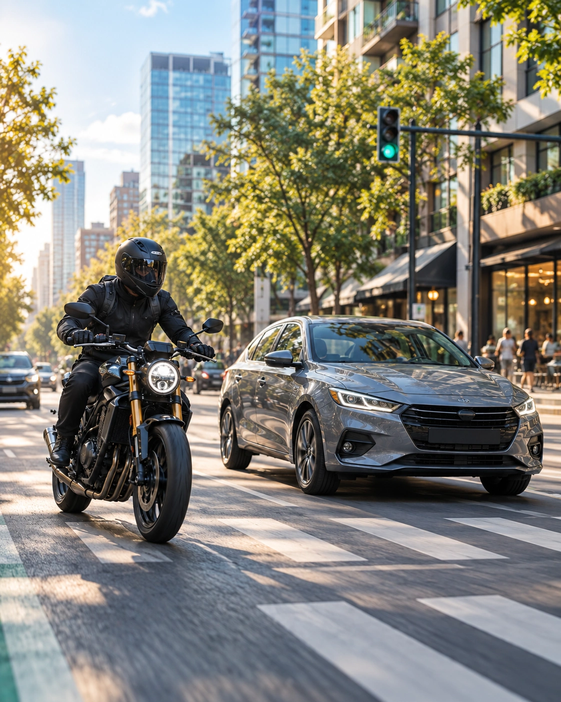
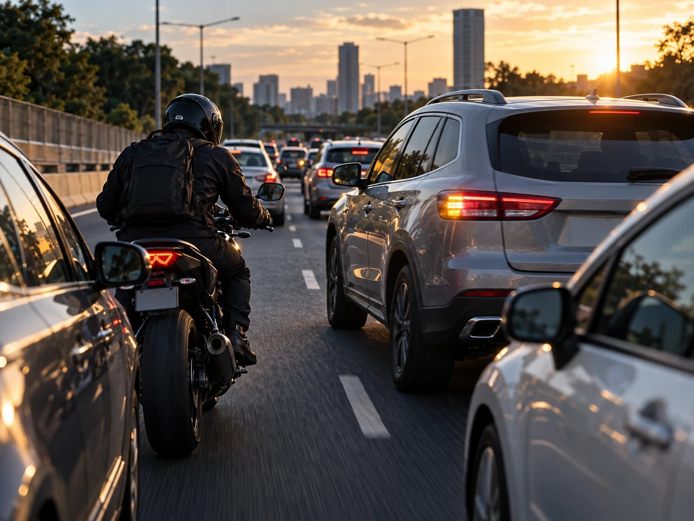
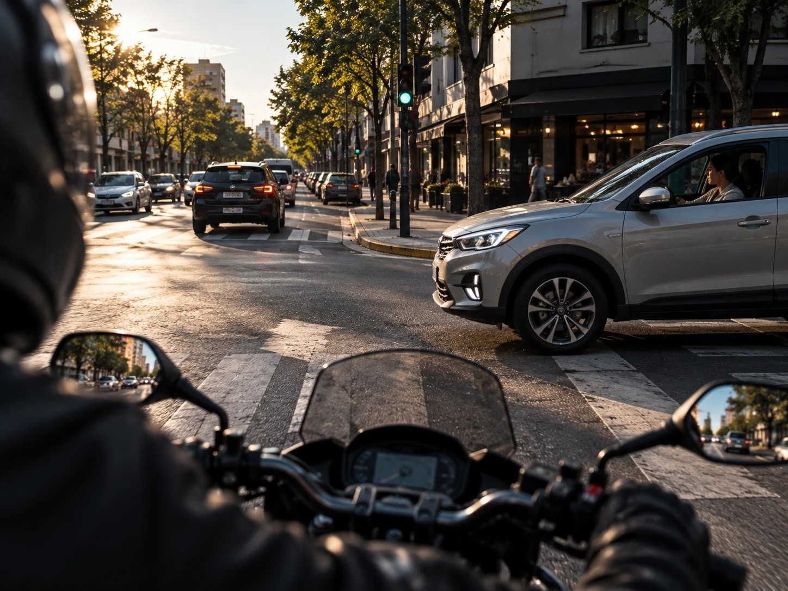
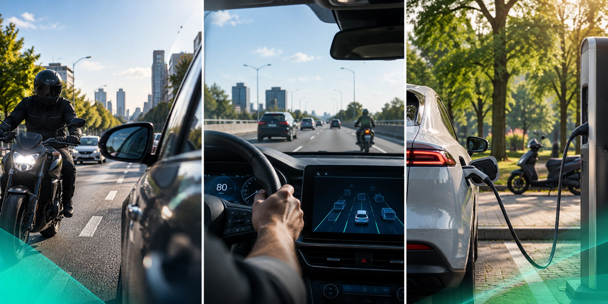
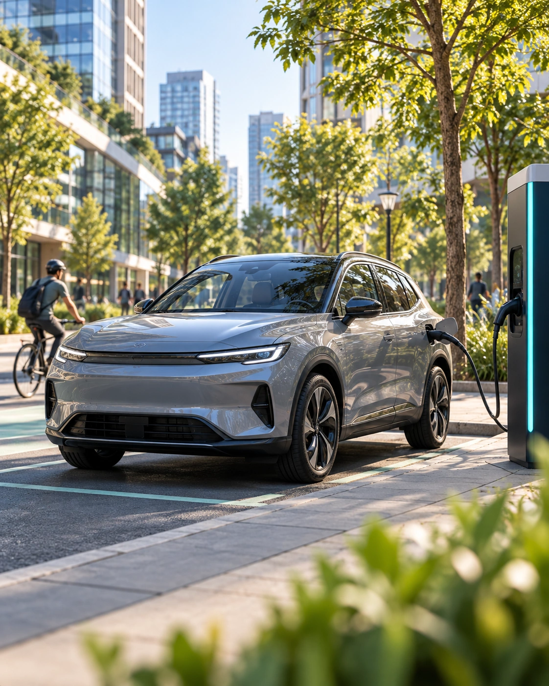
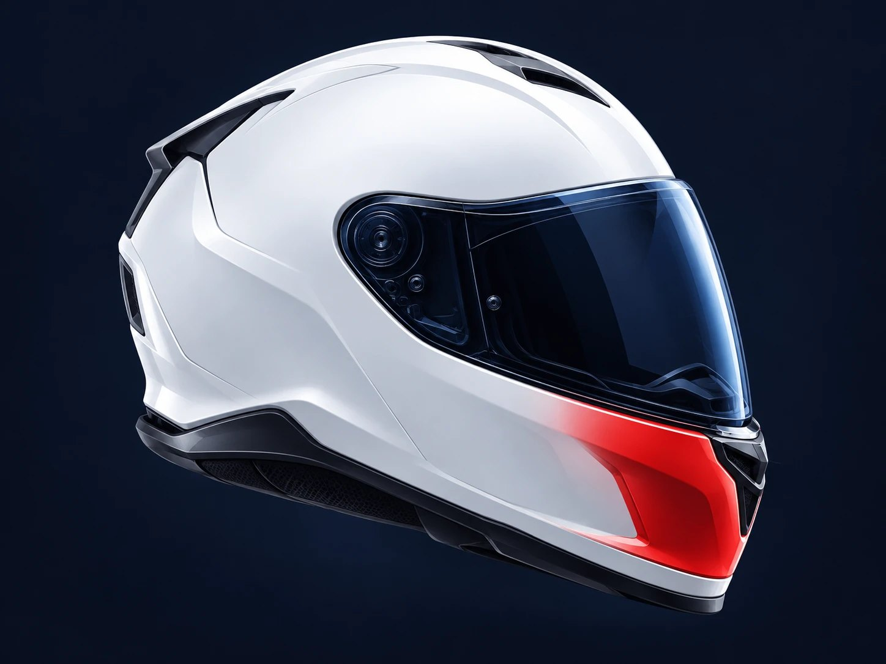

Seguridad vial
Entender los riesgos y conocer las decisiones que ayudan a movernos de manera más segura.
ACA MOV | AUTOMÓVIL CLUB ARGENTINO
Un espacio para descubrir, aprender y repensar la movilidad. Información, conocimiento e ideas para construir una forma de movernos más segura, accesible y sostenible.


Información que ayuda a tomar mejores decisiones.
Nuevas tecnologías, nuevas posibilidades y nuevos desafíos.
Una movilidad más segura se construye entre todos.
UN ESPACIO PARA MOVERNOS MEJOR
Nuevas tecnologías, desafíos de seguridad y otras maneras de trasladarnos están transformando nuestra vida cotidiana. En ACA MOV acercamos información y conocimiento para entender esos cambios y tomar mejores decisiones.

Entender los riesgos y conocer las decisiones que ayudan a movernos de manera más segura.

Descubrir cómo la tecnología está transformando los vehículos, las ciudades y nuestros recorridos.

Conocer alternativas y soluciones para avanzar hacia una movilidad más eficiente y sostenible.
También encontrás: educación, investigación, nuevas formas de movilidad, y proyectos y alianzas.
Hay decisiones que hacen la diferencia.
Todos los días tomamos decisiones mientras nos movemos. Ponernos el casco, usar el cinturón o dejar el celular de lado pueden parecer gestos simples, pero hacen una gran diferencia.
Descubrí cómoEL DESAFÍO
Los siniestros viales tienen consecuencias que van mucho más allá de quienes están involucrados. Entender los riesgos es el primer paso para prevenirlos.
de las víctimas fatales de
2025 iba en moto.
4.060 víctimas fatales en 3.255 siniestros durante 2025. Fuente: Informe Preliminar de Siniestralidad Vial Fatal 2025, ANSV.
vidas perdidas en siniestros viales en Argentina durante 2025.
Luchemos por la Vidade quienes conducen una moto utilizan casco.
de las víctimas fatales con edad registrada tenían entre 15 y 34 años.
ANSVde las motos circulan con todos sus ocupantes usando casco.
de los acompañantes en moto utilizan casco.
de los menores de 15 años que viajan en moto utilizan casco.
Fuente: Datos preliminares del Estudio Observacional de Conductas Motociclistas 2026 FIA Región IV (noa/nea)
RIESGOS EN MOTO
La visibilidad, el estado del camino y las maniobras de otros vehículos pueden cambiar las condiciones de circulación en segundos. Conocer los riesgos ayuda a prevenirlos.
SEGURIDAD EN MOTO
Usarlo correctamente es una de las decisiones más importantes al subirte a una moto. Conocé cómo ayuda a protegerte y qué tener en cuenta para elegirlo y utilizarlo.

Estudio de 598 cascos involucrados en siniestros viales. Otte, D. (1991). SAE Technical Paper 912915. La ubicación de cada zona es esquemática.
Hasta un 74% menos de riesgo de sufrir lesiones cerebrales con un casco seguro y de calidad.
Más de 6 veces menor riesgo de morir en un siniestro vial al usar correctamente un casco seguro y de calidad.
Tiene que ajustarse bien a tu cabeza, sin quedar flojo ni generar puntos de presión excesiva.
Asegurá correctamente la correa de sujeción, incluso en recorridos cortos.
Elegí un casco que cumpla con las normas de seguridad exigidas por la legislación vigente.
Un golpe importante puede comprometer su capacidad de protección, aunque no presente daños visibles.
SEGURIDAD EN MOVIMIENTO
Las normas de tránsito no son simples obligaciones. Son acuerdos que nos ayudan a compartir las calles de manera más segura.
La velocidad influye en tu capacidad de reacción y en la gravedad de un impacto.
El alcohol afecta la atención, los reflejos y la capacidad de tomar decisiones.
Una distracción de segundos puede hacer que no veas lo que pasa adelante.
Casco en moto y cinturón en auto, incluso en los trayectos más cortos.
Anticipá tus maniobras y respetá los espacios de quienes comparten la vía.
Moverte en moto implica tomar decisiones todos los días. Hacelo con conciencia y descubrí cómo desde el ACA te acompañamos en cada recorrido.
Conocé Socio Moto